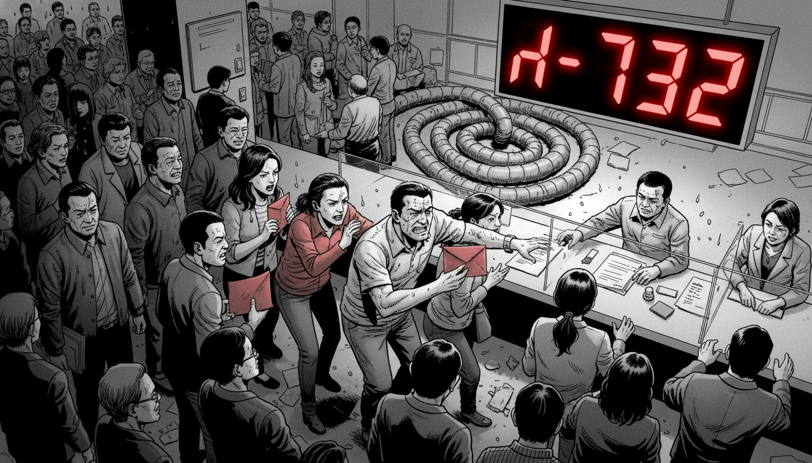
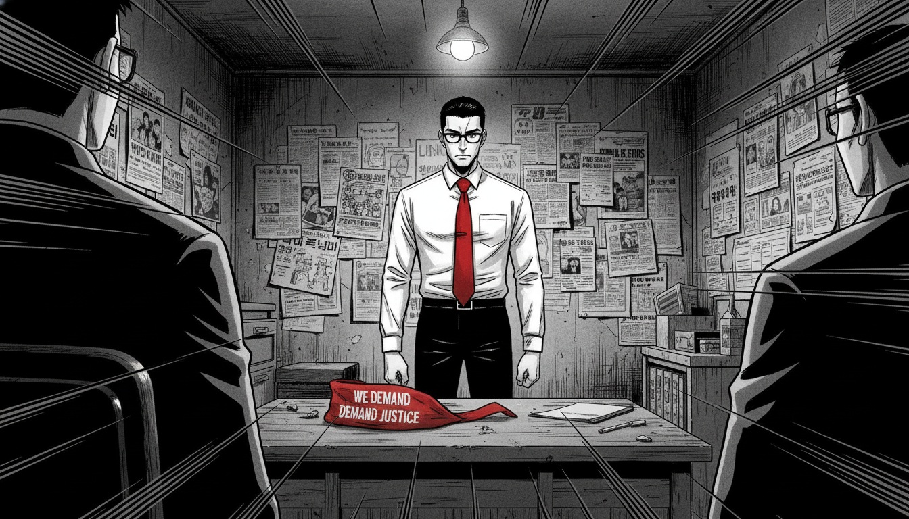

월요일 아침 9시. 구산구청 민원실은 이미 20명의 주민들로 가득했다. 담당 주무관 3명이 땀을 뺐다.
"어르신, 인감증명서는 2번 창구에서..."
"주차 위반 과태료는 3번 창구..."
복도 끝, 김철수가 민준을 불렀다.
"민준 씨, 저기 좀 봐봐."
김철수는 노트북 화면을 보여줬다. ChatGPT Canvas가 열려 있었다.
"이거 뭐야? 내가 쓴 보고서를 AI가 고쳐주네?"
화면에는 김철수가 작성한 '지역 상권 활성화 보고서' 초안이 있었다. 그리고 오른쪽에는 ChatGPT가 제안한 수정안이 실시간으로 나타나고 있었다.
"민준 씨, 이거... 20년간 손으로 하던 거 10분 만에 끝났어."
민준은 웃었다.
"형, Canvas는 협업 도구예요. AI가 초안을 다듬어주고, 형이 최종 검토만 하면 돼요."
"협업... AI랑?"
"네. AI는 형의 조수예요."
며칠 후. 구청 내부에 소문이 퍼지기 시작했다.
"복지과랑 지역경제과, AI 쓴다며?"
"맞아. ChatGPT인가 뭔가..."
"그거 쓰면 우리 일자리 없어지는 거 아냐?"
"공무원도 이제 AI한테 밀리는 거지."
민원실 앞, 노조 게시판에 대자보가 붙었다.
[긴급 성명]
"AI 도입, 공무원 일자리 위협한다"
- 구산구청 공무원 노동조합
민준은 게시판 앞에 서서 대자보를 읽었다. 가슴이 답답했다.
"민준 씨."
뒤에서 박소희의 목소리가 들렸다.
"노조위원장이 면담 요청했어요. 오후 3시, 노조 사무실로 오래요."

오후 3시. 노조 사무실. 위원장 정민수(48세, 민원실 주무관)가 팔짱을 끼고 앉아 있었다. 옆에는 부위원장 2명이 함께였다.
"강 주무관, 앉으세요."
민준은 의자에 앉았다. 박소희도 옆에 앉았다.
"우리가 부른 이유 아시죠?"
"...AI 도입 건인 것 같습니다."
"맞아요. 솔직히 말씀드릴게요. 우리 조합원들이 불안해해요."
정민수는 서류를 꺼냈다.
"민원실만 해도 주무관 10명이 하루 200건 민원 처리해요. 그런데 AI가 그걸 다 하면... 우리 10명 중 몇 명이 잘리겠어요?"
민준은 고개를 저었다.
"위원장님, AI는 사람을 자르려고 도입하는 게 아닙니다."
"그럼 뭐예요?"
"사람이 더 중요한 일을 할 수 있게 돕는 거예요."
정민수는 코웃음 쳤다.
"그런 말 다 똑같아요. 민간 기업들도 처음엔 그렇게 말했죠. 결국 구조조정 했지만."
박소희가 끼어들었다.
"위원장님, 공무원은 민간하고 달라요. 우리는 법으로 정원이 보장돼 있어요."
"지금은요. 하지만 AI가 다 하면 정원 자체를 줄이겠죠."
회의실이 조용해졌다. 민준은 심호흡을 했다.
"위원장님, 제가 실제로 보여드릴게요. AI가 뭘 하는지."
민준은 노트북을 꺼냈다.
민준은 ChatGPT를 켰다.
"위원장님, 민원 하나 예시로 주세요."
정민수는 잠시 생각하더니 말했다.
"주차 위반 과태료 이의 제기요. '제가 주차한 곳은 불법 주차 구역이 아니었습니다'라는 민원."
민준은 프롬프트를 입력했다.
10초 후, 답변이 생성됐다.
정민수는 화면을 뚫어지게 바라봤다.
"이게... 10초?"
"네. 하지만 이건 초안이에요. 위원장님이 최종 검토하고, 실제 현장 사진 확인하고, 민원인과 통화해야 해요."
"그럼... AI가 하는 건?"
"단순 반복 작업이요. 초안 작성, 양식 맞추기, 오타 검사. 위원장님은 그 시간에 진짜 복잡한 민원을 처리하시면 돼요."
정민수는 팔짱을 풀었다.
"...그럼 우리가 더 많은 민원을 처리하게 되는 거 아닌가요?"
박소희가 답했다.
"그렇죠. 하지만 그만큼 주민들이 더 빨리 도움을 받을 수 있어요. 그게 우리 일 아닌가요?"
정민수는 한참을 침묵하다가 입을 열었다.
"...한 가지 조건이 있어요."
"말씀하세요."
"AI 교육을 전 직원 대상으로 하세요. 한 부서만 쓰면 불공평해요. 그리고 교육은 근무 시간 내에, 강제가 아닌 자율로."
민준은 고개를 끄덕였다.
"약속드리겠습니다."
일주일 후. 대회의실에 100명의 직원이 모였다. 1차 교육 50명의 두 배였다. 민원실, 세무과, 건축과, 환경과... 거의 모든 부서에서 참석했다.
민준은 단상에 섰다. 이번에는 손이 덜 떨렸다.
"오늘은 ChatGPT Canvas에 대해 배워보겠습니다."
그는 화면을 공유했다. Canvas 인터페이스가 떴다.
"Canvas는 문서를 AI와 함께 작성하는 도구입니다. 왼쪽에 여러분이 쓰고, 오른쪽에 AI가 제안해요."
민준은 실시간으로 시연했다. 회의록을 작성하면서, AI가 실시간으로 문장을 다듬고, 누락된 내용을 제안하고, 양식을 맞춰주는 과정을.
"와..."
청중석에서 감탄이 나왔다.
"이거 진짜 편하겠는데?"
"우리 부서도 써볼까?"
교육이 끝나고, 10명 이상이 민준에게 다가왔다.
"주무관님, 우리 부서 맞춤 교육 가능한가요?"
"계약서 검토에도 쓸 수 있나요?"
"예산 보고서 작성은요?"
민준은 하나하나 대답했다. 옆에서 김철수가 도왔다.
"여기는 제가 답해드릴게요. 저도 이제 좀 알거든요. 하하."
사람들이 빠져나간 복도. 세무과 주무관 2명이 복도 구석에서 수근거렸다.
"그래도... 10년 후에는 어떻게 될까?"
"AI가 더 발전하면 우리 일 다 빼앗기는 거 아냐?"
"지금은 도구라지만..."
한 명이 한숨을 쉬었다.
"변하긴 해야 하는데, 솔직히 무섭긴 해."
변화는 시작됐지만, 불안은 여전히 남아 있었다.
교육이 끝나고. 민준은 박소희와 함께 사무실에 남아 있었다.
"과장님, 제가 한 게 맞는 걸까요?"
"갑자기 왜요?"
"노조에서 일자리 걱정하는 거 보니까... 제가 혹시 나쁜 일을 하는 건 아닌가 싶어요."
박소희는 커피를 타주며 앉았다.
"민준 씨, 변화는 항상 두려움을 동반해요. 20년 전에 컴퓨터가 처음 들어왔을 때도 그랬대요. '타자기가 사라지면 우리 일자리는?' 하고요."
"그때는 어떻게 됐어요?"
"타자기는 사라졌죠. 하지만 일자리는 안 없어졌어요. 사람들이 더 빨리 문서를 작성하고, 더 복잡한 일을 하게 됐죠."
민준은 고개를 끄덕였다.
"AI도 마찬가지예요. 단순 작업은 AI가 하고, 사람은 사람만 할 수 있는 일을 해요."
"사람만 할 수 있는 일이요?"
"네. 주민을 위로하고, 판단하고, 책임지는 거요."
민준은 창밖을 바라봤다. 구산구의 낡은 건물들이 석양 빛에 물들고 있었다.
민준이 사용한 기술: Canvas를 통한 문서 협업
기존 ChatGPT의 한계:
- 대화창에서 답변 → 복사 → 워드에 붙여넣기 → 수정 → 다시 물어보기
- 반복 작업이 비효율적
- 버전 관리 어려움
Canvas의 장점:
- **실시간 협업**: 왼쪽에 작성, 오른쪽에 AI 제안
- **부분 수정**: 전체가 아닌 일부만 수정 요청 가능
- **버전 관리**: 이전 버전 자동 저장
비유:
- 일반 ChatGPT = 메신저로 작업 지시
- Canvas = Google Docs처럼 함께 작업
필요 조건:
- ChatGPT Plus (유료 버전) 또는 무료 버전 (제한적)
- 웹 브라우저 (크롬, 엣지 등)
접속 방법:
1. ChatGPT 실행
2. 새 채팅 시작
3. 프롬프트 입력 후 "Canvas로 열기" 버튼 클릭
(또는 "Canvas로 이 문서를 작성해줘"라고 요청)
첫 시작 프롬프트:
Canvas가 열리면:
- **왼쪽**: AI가 생성한 초안
- **오른쪽**: 편집 도구 (길이 조절, 가독성 개선, 이모지 추가 등)
전체 수정이 아닌 특정 부분만 수정:
1. 수정하고 싶은 문단 드래그
2. 오른쪽 편집 도구에서 "이 부분 수정" 선택
3. 요청사항 입력
예시:
패턴 1: 초안 작성 → AI 다듬기
패턴 2: AI 초안 → 사용자 검토
상황: 비슷한 유형 민원 20건에 개별 답변 필요
상황: 회의 중 메모 → 회의 후 정리
Canvas의 자동 저장 기능:
- 수정할 때마다 이전 버전 자동 저장
- 하단 "버전 기록" 클릭 → 이전 버전 복구 가능
활용:
| 기능 | 일반 ChatGPT | Canvas |
|------|--------------|--------|
| 문서 작성 | 대화창에서 복사 | 실시간 편집 |
| 부분 수정 | 전체 다시 요청 | 원하는 부분만 수정 |
| 버전 관리 | 수동 저장 | 자동 저장 |
| 협업 느낌 | 없음 | Google Docs 느낌 |
| 적합한 작업 | 짧은 질문/답변 | 긴 문서 작성 |
❌ 하지 말아야 할 것:
1. 민감한 개인정보 입력 (Canvas도 서버에 저장됨)
2. AI 초안을 검증 없이 그대로 제출
3. 법률/의료 등 전문 분야 최종 판단
✅ 해야 할 것:
1. AI는 초안, 사람이 최종 검토
2. 중요한 숫자/날짜는 반드시 재확인
3. 조직 내규와 양식 준수
민준은 Canvas 화면을 닫았습니다. 오늘 교육에 참석한 100명의 얼굴이 떠올랐습니다.
처음엔 두려워하던 사람들이, 마지막엔 "우리 부서도 써보고 싶다"고 했습니다.
변화는 어렵지만, 불가능하지 않습니다.
박소희가 말했습니다.
"민준 씨, 내일 민원실에서 Canvas 교육 요청했어요. 같이 갈래요?"
민준은 웃으며 대답했습니다.
"네, 과장님. 같이 가요."
다음 화에서 계속...